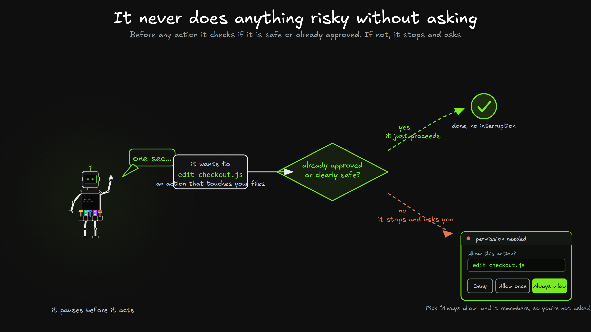

Before you customize anything, every AI Employee already comes with the machinery to do real work. This module is that machinery. The tools it uses to get things done, and the safety rail that keeps it from doing anything risky without asking you first.
What it is. Claude has a small set of built-in tools it reaches for automatically, and they map straight onto the loop from the last module. To gather it reads and searches. To act it edits and runs things. To verify it re-checks its own work. You never call these by name. Claude picks the right one for the step it's on.
| Loop step | Tools it uses | What that does |
|---|---|---|
| 🔍 Gather | Read, Glob, Grep, WebFetch, WebSearch | Open files, find files by name, search text inside them, pull a web page, search the web |
| ✏️ Act | Edit, Write, Bash | Change a file, create a new file, run a command |
| ✅ Verify | Bash (run the tests), Read | Run the checks, then re-read the result to confirm it worked |
Why it matters. Notice there's no separate tool for rename, delete, or move. Bash is the swiss-army knife. One tool runs any command your computer can run, so Claude just types the command for the job.
rename old.ts to new.ts and move it into the src folder| You want to… | Claude types |
|---|---|
| Rename a file | mv old.ts new.ts |
| Delete a file | rm file.ts |
| Move a file | mv file.ts src/ |
| Install a package | npm install axios |
Claude types these for you, and before anything destructive runs it stops and asks first. That's the next part.
What it is. Claude never does something risky without asking. Before any action it runs one check. Is this already approved or clearly safe? If yes, it goes ahead. If not, it stops and asks you, and you pick Deny, Allow once, or Always allow. Pick "Always allow" and it writes a rule, so it won't ask you for that same thing again.

Why it matters. This is what makes the glass box safe. You see exactly what it's about to do, and nothing risky happens until you approve it. The AI Employee is fast, but you stay in charge of the steering wheel.
Switch to plan mode and propose how you'd fix this, but don't change anything yet.
Or just say: "plan first, don't make changes"
The asking behavior has five modes. Most of the time you live in the first one. The others let you loosen or tighten the leash for a stretch of work.
You can also pre-write rules once, so the right things are approved or blocked forever. They live in .claude/settings.json. Always allow the safe, repeated stuff and always deny the dangerous stuff.
You don't have to write these by hand. Every time you click "Always allow," Claude writes one of these rules into that file for you.